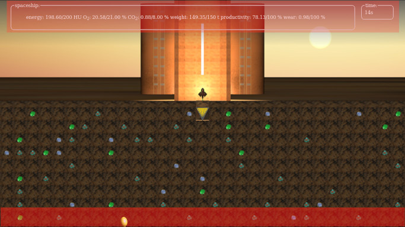
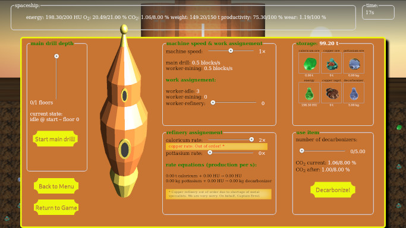

Help: How to use the gui
The main userinterface is hidden per default. Only the headup-gui is visible all the time. By clicking on the headup-gui or the top of the menu rocket visible at the bottom of the screen, the game menu will slide up. To hide the settings, simply click again. The clickable areas are marked in the picture below. Getting started
First steps
To achieve the game's task, you need to get a central mining tunnel for the workers. Otherwise it is impossible to mine the resources. Take a good look at the map and decide, where it is most rewarding to mine. Then open the game menu  and select with the slider placed in the fieldset "main drill depth" the desired drilling depth. Confirm your choice by clicking on the "Start main drill!" button. The drill will start working; the progress will be displayed in the fieldset. In the same moment, a worker will be commissioned for mining. This worker can not be decomissioned for the rest of the game! As soon as the first blocks are removed, the destination for the worker can be set by simply hiding the menu and clicking on the desired block that should be removed. If your choice is not yet reachable by a horizontal tunnel, don't worry, the miner will remove all blocks between himself and the destination. If you feel the need, you can always go deeper if necessecary (up until you reach the main drill limit).A short introduction to the resource system
The basic principle of the game is very simple: Everything consumes resources. The player's task is yet to minimize the consumption, but still being able to mine 15 t of copper ore and – if possible – refine it to copper ingots.
Your main constraints are:
- Keep the energy above 50 HU,
- Keep the CO2 below 8 %,
Maschine speed, workers & productivity
There are three main variables that determine your success: Maschine speed, worker asignement and productivity.The machine speed acts as a multiplier. When set to zero, no operations are possible, but you do not consume any energy. The higher the value is set, the faster the main drill and the workers will move. Additionally, the refinery output is enlarged. The downside of setting a high machine speed: A lot more energy consumption and wear, which can be critical when it comes to the final take off.
The amount of assigned workers can also multiply the output of operations. The downside of employing more workers: Energy & O2 consumption will rise compared to idle state. Same applies for CO2 production.
The productivity massively determines the possible refinery production. It depends on
- O2 concentration,
- CO2 concentration,
- machine speed.
Refinery
The refinery is a tool to extend your possible working time by generating new supplies as the initial storage won't last long.
The refinery production and consumption depends on the following parameters:
- machine speed,
- number of worker assigned to refinery,
- material multiplier (for weighting convertion priorities) ,
- productivity.
Fulfilling the task
If you have mined 15 t of copper ore, the task is automatically fulfilled. When the value is reached, a pop-up window will appear. You can continue the game for mining further resources, reliefing weight by converting raw resources into their refinery products or directly prepare the final take off.
Final take off
When you decided to leave this desert planet, all ressource values will freeze and your engineer will calculate the probability for a successful take off. As parameters, he uses:- the available energy,
- the total weight,
- the wear of the rocket.